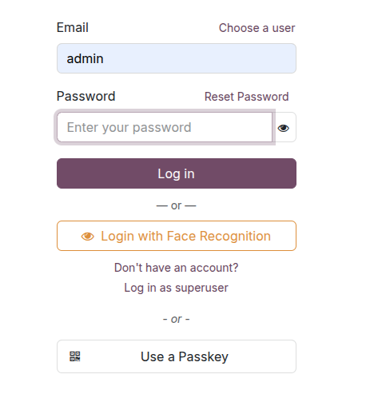
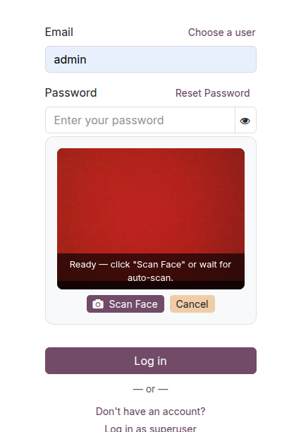
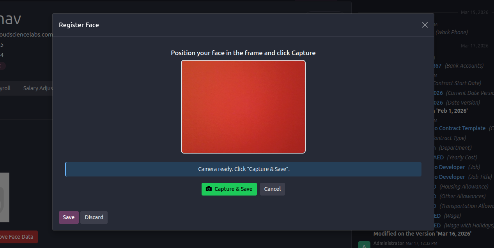

Face Recognition
BIOMETRIC ACCESS CONTROL v2.0
Overview
This module integrates advanced neural network processing directly into the Odoo ecosystem. Experience zero-latency biometric authentication.
Passwordless Neural Login
Dynamic Vector Database Linking
Real-time Liveness Detection
Dynamic Vector Database Linking
Real-time Liveness Detection
Key Capabilities
Secure Login
Webcam Sync
HR Integration
Auto-Update
System Interface

1. User Authentication Flow

2. Biometric Profile Configuration

2. Biometric Profile Configuration

2. Biometric Profile Configuration